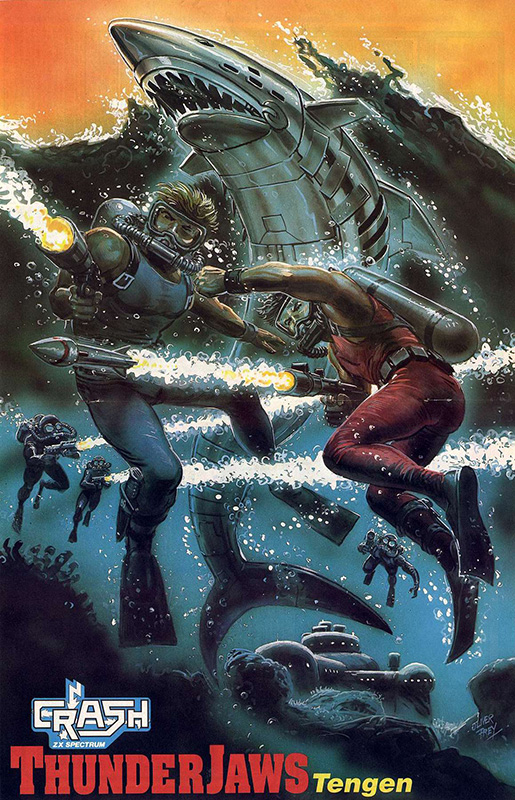
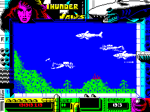

ThunderJaws


{kind=link}

| Publisher: | Domark |
| Price: | £10.99 / £17.99 |
| Year: | 1991 |
| Source: | CRASH, Issue 91 |

Dusky maidens, lizard-women, Madame Q and something big, blue-ish with lots of very, very, very sharp teeth. Yikes! It’s ThunderJaws (as RICHARD EDDY soon discovers). Open wide and say ‘Arrrrgggghhhh!’

Lordy me! Strike me down with a feather and call me Betsy if the world isn’t under threat again. A megalomaniac female is crafting a cunning plan for world domination. Madame Q (for it is she) is creating an army of genetic mutants to storm the world and take it in her name. Deep in her subterranean fortress she creates an army of fearful opponents to aid her. Naturally, she has to be stopped and it looks like you’re just the guy to infiltrate her HQ and give the bitch stick.
ThunderJaws is a coin-op, not a smash hit by coin-op standards but one than translates well into a Speccy game. There’s a couple of things missing, most noticeably the simultaneous two-player action has been scaled down to a single-player game, and the number of levels has been reduced to four (though truth be known, the amount of levels found in the coin-op made it drag on a bit much).
MORE THAN FOUR (SORT OF)

Actually, there are eight different sections to the game, each level having two parts. In part one of each level there’s a underwater adventure as you scuba dive your way to one of Madame Q’s bases. In the second part, horizontally-scrolling platform combat gameplay comes into action.
Level one, the first part, has you kitted out in scuba gear and equipped with a harpoon gun. You’re swimming along the ocean bed with the scenery scrolling horizontally as you paddle your way along, negotiating the hills and the bumps of the ocean floor. Watch out for booby traps — touching one results in the loss of energy (top it up by collecting energy canisters).
Here Madame Q’s attack begins — the cyber-sharks are unleashed. You may have to tackle as many as four at a time but a well-placed blow with your harpoon makes one disappear in a stream of bubbles (a nice effect, that). Additionally, Q’s armed cyber-divers swim in from both sides of the screen. The enemies attack at random, so there’s no way of planning your counterattack — mindless blasting, ahoy!
POWER-UP CITY!
Thankfully, you can improve your armoury over your base-weapon, the harpoon, by picking up an Uzi-type blaster firing three shots at once, a harpoon fitted with explosive bolts, a devastating flame thrower, a tri-shot weapon and a super-seeker (a kind of homing missile). Great, eh? But ammo supply is limited — a counter in the bottom left-hand corner of the border indicates the amount of ammo available.
To complete the first part, blast a door open and you’re transported inside one of Q’s HQs. Whip off your scuba gear and prepare for a dashing-about, leaping, bounding platform-based slice of thrill cake.
Inside, ThunderJaws plays similarly to Rolling Thunder. Opponents (guards, robo-dogs and other bizarre attackers) appear from behind doors on ground level and on the platforms above you. You can leap between the two levels to eliminate your foes and to collect any power-ups lying about. The scrolling’s quick and the action belts along — you could be left gasping for breath after all your acrobatics!
Reaching the conclusion of each level takes you into battle with a big, heavily armed opponent (yeah, it’s unoriginal but it wouldn’t be the same without an end-of-level monster). On the first level, it’s some kind of diving craft floating about inside (odd...).
Later levels follow the same pattern — a scuba sequence followed by a platform combat scene. But it gets progressively harder and more skill is required, as Madame Q throws more and more strange opponents at you.
THOSE LEVELS IN FULL
The graphics remain bright, bold and colourful throughout and, even though sprites are on the big-ish side, movement is speedy. Level two takes you through a junkyard-type underwater scene and into another of Q’s bases — more heavily armed with laser bolts flying about the place.
Level three’s underwater scene is almost a Scramble game in deep sea caverns, which leads into spooky internal caverns populated with demonic creatures and a smashing end-of-level beast who makes the screen shake as he slams a fist into the ground!
The final level is pretty tortuous as Q chucks everything she’s got at you as you battle through the two parts before confronting Q herself (and she’s still got a couple of surprises up her sleeve!).
What was an unremarkable coin-op has made a special Speccy game — it’s been very well programmed. There’s real gameplay in there, and plenty of it; the two different elements of every level work really well and prevent the game from becoming samey (a problem with a lot of software these days).
Obviously, the 128K version is the best, with a good soundtrack and effect, and — hurrah! — it’s one load. 48Kers have a multi-load and there’s a lot of sound missing.
On the whole, ThunderJaws looks good, plays well, the difficulty level’s just about right and it’s probably the best thing from Tengen since Robot Monsters. Bravo, people!
RICHARD — 90%
Hence the title?
ThunderJaws — so named because of the sharks, isn’t it? Well, there’s a bit more to it than that. Here’s the story: Once upon a time there were two coin-op producers — Tengen/Atari and Tecmo. and they were lush-around love partners, Together they created the arcade smash Rolling Thunder. ‘Hurrah!’ cried many a gamesplayer, as they jammed their 10ps into the machine.
Then, all of a sudden, Tengen and Tecmo weren’t lush-around love partners anymore. ‘Aw!’ cried said gamesplayers, ‘does this mean we’ll never see a Rolling Thunder 2’? ‘No, not at all replied Tecmo and Tengen as one entity (even though they weren’t anymore). Yes, both companies had been separately developing their own Rolling Thunder 2. Tengen developed a game very much like Rolling Thunder but added an underwater scenario and additional scuba shoot-’em-up sections. Tecmo, however, had updated the Rolling Thunder game, improving on the concept.
The problem for Tengen was they didn’t own the name Rolling Thunder anymore. So, being a bit crafty-like, they took the Thunder bit from Rolling Thunder and added the Jaws bit to highlight the underwater element. And, tada!, that’s why we’re playing ThunderJaws today. Good, isn’t it?

Who remembers Scuba Dive? That was a corking game and a scuba theme has never appeared in a decent game since — until now. ThunderJaws is a really good, fun game with great graphics. Plenty of colour has been splashed about the screens and brings the whole game to life, making you want to play on and see even more. If it had been developed as a monochrome game it would have lost all its appeal. The presentation’s very good, with really nifty programming techniques to make the screen do all sorts of peculiar things. With so much to do (okay, ‘blast’) and so much to see, ThunderJaws offers many hours of solid gaming entertainment.
NICK — 89%
RATING
The two different styles of gameplay and great graphics detail make ThunderJaws tremendous fun for any Speccy player!
| Presentation: | 93% |
| Graphics: | 90% |
| Sound: | 81% |
| Playability: | 87% |
| Addictivity: | 89% |
| Overall: | 90% |